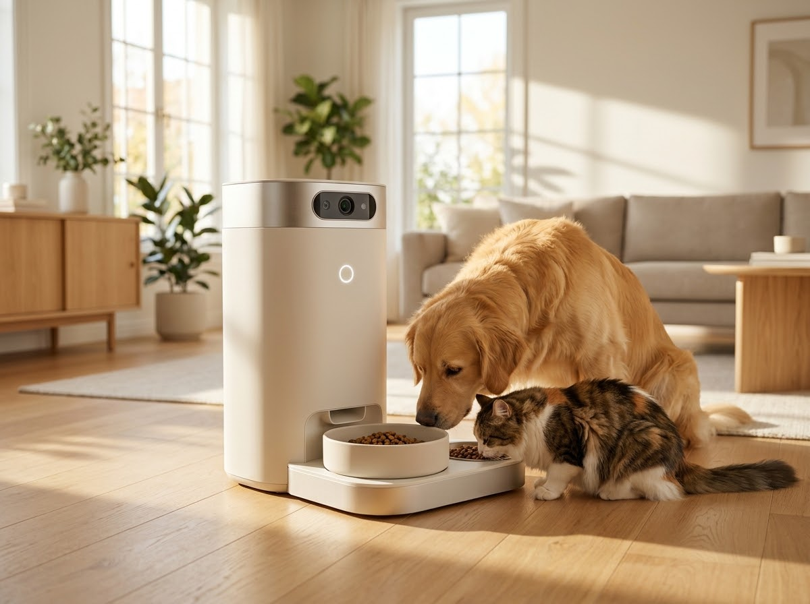
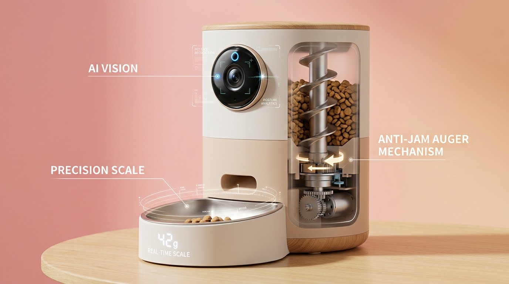

기존의 한계 01schedule
타이머·중량 방식은 대상을 구분하지 못합니다
시간과 양은 제어할 수 있지만 누가 먹는지는 알 수 없어, 식탐 많은 아이가 다른 아이의 처방식까지 먹어버립니다.
verifiedPAWFEEDER AI 솔루션
얼굴 인식으로 등록된 개체를 식별하고 급여 대상일 때만 급식구를 엽니다. 다른 개체가 다가오면 닫힌 상태를 유지합니다.
카메라 기반 비접촉 개체 인식으로 등록된 반려동물에게만 맞춤 사료를 정량 지급하고, 개체별 실제 섭취량을 자동으로 기록합니다. 다견·다묘 가정과 위탁 케어 센터의 오급여 문제를 해결합니다.
※ 개발 목표치 기준

Why Physical AI
다견·다묘 가정이나 처방식·연령별 사료가 필요한 환경에서, 개체를 구분하지 못하는 급식기는 오급여와 건강 악화로 이어집니다.
시간과 양은 제어할 수 있지만 누가 먹는지는 알 수 없어, 식탐 많은 아이가 다른 아이의 처방식까지 먹어버립니다.
목걸이 태그를 잃어버리거나 아이가 거부하기도 하고, 접근 각도에 따라 인식률이 떨어지며 부품 추가로 원가도 올라갑니다.
아이마다 너무 적게 또는 너무 많이 먹지는 않았는지, 개체별 식사량을 꾸준히 관찰하기가 어렵습니다.
How it Works
보호자가 반려동물의 얼굴 사진 3~5장과 개체별 급여 스케줄(사료량·시간)을 등록하면, 이후 과정은 급식기가 알아서 처리합니다.
ToF·PIR 센서가 다가오는 물체를 감지하고, 30cm 이내로 들어오면 카메라가 촬영을 시작합니다. 평소에는 대기 상태로 전력을 아낍니다.
기기 안의 Edge AI가 ① 동물 감지 ② 얼굴 특징점 추출 ③ 등록된 개체와의 유사도 계산을 차례로 수행합니다.
유사도 85% 이상의 등록 개체이고 급여 시간대라면 급여 명령을 만듭니다. 미등록·비대상 개체라면 급식구를 닫은 채 접근 경고를 남깁니다.
서보 모터가 출구 도어를 열고, 스텝 모터가 설정량(예: 25g)만큼 디스펜서를 회전시킵니다. 로드셀이 그릇 무게를 실시간으로 확인합니다.
식사를 마치고 자리를 뜨면 남은 사료의 무게를 재서 개체별 실제 섭취량을 계산합니다.
데이터는 MQTT로 서버에 전송되고, 보호자는 푸시 알림과 일간·월간 섭취 그래프로 아이의 식사를 확인합니다.
Inside the Machine
경량 Edge AI와 정밀 센서, 구동 모터가 하나의 기기 안에서 감지 → 판단 → 행동을 완결합니다.

하드웨어 구성 이미지야간 IR 조명 환경에서도 잔상 없이 움직이는 반려동물의 얼굴을 포착합니다. ToF 거리 센서가 접근을 감지할 때만 카메라를 깨워 전력을 절감합니다.
ESP32-S3 또는 RK3566 칩에서 TensorFlow Lite Micro로 INT8 양자화 모델을 실행합니다. MobileNetV3-Small이 얼굴을 찾고 MobileFaceNet이 개체 특징을 비교합니다.
로드셀 중량 피드백 루프로 서보·스텝 모터를 제어해 목표량만큼 정확히 토출하고, 식사가 끝나면 잔여량까지 측정합니다.
사료 부족과 토출구 막힘(Jamming)을 감지해 예외 처리합니다. 네트워크가 끊겨도 기기에 저장된 스케줄과 Edge AI로 급여를 계속합니다.
Edge-to-Cloud Platform
급여 이벤트·섭취량·사료 잔량·장치 상태가 실시간으로 동기화되어, 여러 대의 기기를 한 곳에서 관리할 수 있습니다.
2.4GHz Wi-Fi와 MQTT over TLS로 AWS IoT Core에 연결되어 가벼운 데이터를 안전하게 전송합니다.
전체 기기 상태 모니터링, 통계 분석, OTA(무선) 펌웨어 업데이트 배포를 한 화면에서 처리합니다.
장치 동작 로그, 인식 실패 로그, 섭취 이력을 최소 1년간 보존합니다. 장치 정보는 PostgreSQL, 섭취량·체중 시계열은 InfluxDB에 저장합니다.
Firebase Cloud Messaging으로 iOS·Android에 급여 완료, 미섭취, 사료 부족 알림을 실시간으로 보냅니다.
Business Value
반려동물 50두를 수용하는 위탁 케어 센터에 급식기 50대를 도입하는 경우를 가정해 산정한 결과입니다.
초기 투자비 ÷ 월 순 절감액
연간 순 절감액 3,300만 원 기준
월 절감액 320만 원 − 월 운영비 45만 원
기기 50대 × 25만 원 + AI 모델 튜닝·현장 설치
※ 가정에 기반한 추정치이며, 실제 효과는 운영 환경에 따라 달라질 수 있습니다.
위탁 케어 센터, 보호소, 다견·다묘 가정을 위한 도입 상담을 진행합니다. 운영 규모에 맞춘 기기 구성과 예상 절감 효과를 안내해 드립니다.